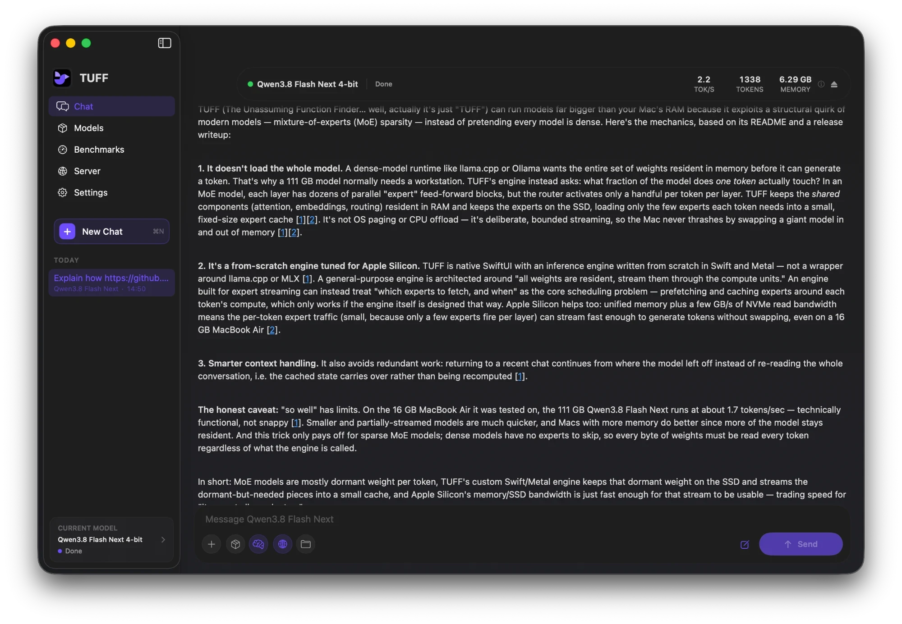

TUFF
Run models bigger than your Mac's memory.
Local AI for Mac. Free and open source.
A real Qwen3.8 Flash Next run on a 16 GB MacBook Air, sped up.


300B+ parameters.
In 16 GB of memory.
Mixture-of-experts models only use a few experts per token. TUFF leaves the rest on the SSD and reads just what it needs.
Experts stream from the SSD into Apple Silicon, one word per token
Web and file search
Off until you turn it on. Answers cite their sources.
Local API
OpenAI-compatible, for agents and other apps.
Benchmarks
Test your Mac and post it to the leaderboard.
Saved chats
Pick a chat back up without reprocessing it.
How TUFF compares.
Swipe or scroll to compare every app. TUFF is the first column.
| TUFF | LM Studio | Ollama | Colibrì | TurboFieldfare | |
|---|---|---|---|---|---|
| Built only for Apple Silicon Macs | ✓ | – | – | – | ✓ |
| Desktop chat app | ✓ | ✓ | ✓ | ◐ | ✓ |
| Built-in web search in chat | ✓ | – | ◐ | – | – |
| Search your own folders from chat | ✓ | ◐ | – | – | – |
| Local OpenAI-compatible server | ✓ | ✓ | ✓ | ✓ | ◐ |
| Command-line tools | ✓ | ✓ | ✓ | ✓ | ✓ |
| Image input | ✓ | ✓ | ✓ | ✓ | ✓ |
| Dense models | ✓ | ✓ | ✓ | ✓ | – |
| Own engine, not MLX or llama.cpp | ✓ | – | – | ✓ | ✓ |
| Streams MoE experts from disk | ✓ | – | – | ✓ | ✓ |
| Open-source desktop app | ✓ | – | ✓ | ✓ | ✓ |
| Windows and Linux | – | ✓ | ✓ | ✓ | – |
| Models | 18 | GGUF / MLX catalog | Model library | 13 engines, mostly MoE | Gemma 26B |
✓ yes · ◐ partly · – no. Features only, from each project's docs on October 8, 2026. Not benchmarked against each other.
Get TUFF.
brew install --cask tuff-app/tap/tuffNot notarized yet, so the first time, Control-click the app and choose Open.
Open source under Apache 2.0 on GitHub.